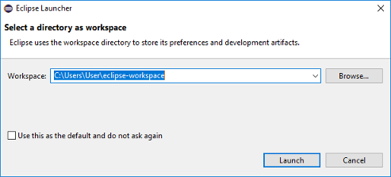
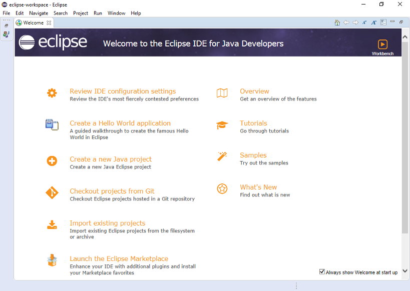

Step 1: Installing and configuring Eclipse
Step 1a: Download
NOTE: if you used Eclipse before, you may have an older version installed. If so, we strongly recommend you uninstall it and install the latest version for maximum compatibility.
You can download Eclipse at eclipse.org/downloads. The latest version, as of time of writing, is Eclipse SimRel.
Step 1b: Installation
Run the Eclipse installer. You should see a window like the one below; Select the first "Eclipse IDE for Java Developers" option.

After that point, you can keep hitting "yes" and select all the default options (unless you want to change something).
You should eventually see a screen like this. Click the "Launch" button.
Step 1c: Configuration
When you run Eclipse, it'll ask you where you want your workspace to be (see screenshot below for example). Your workspace will be the location where Eclipse will add any new projects you create. You can change the location of the workspace if you want: just make sure you remember what you picked.

Once you're done, you should see a "Welcome" screen like below. Close the "welcome" tab to open the regular editor.

Next, select "Windows > Preferences" (PC) or "Eclipse > Preferences" (Mac) in the menu. Then, select "Java > Installed JREs":
Click the "Search" button and select the "Java" folder. This folder should contain your installed JRE and JDK. (If it contains only the installed JDK, that's also ok). You can probably find this folder located at:
- Windows:
C:\Program Files\Java - Mac:
/Library/Java
For example, on Windows:
- Windows:
After hitting "ok", you should see a screen with a line for either both the JRE and the JDK, or just the JDK. Select the line for the JDK:
Click the "Apply and close" button.
Eclipse, by default, contains a fair degree of clutter. If you want to minimize the clutter, feel free to close the "Task List" and "Outline" tabs/views to the right.